Sunny doer
Walk Moselsteig Stage 8 from Leiwen — 14 km of cliffs and vines. Land at Stella Noviomagi for the 16:00 Roman wine-ship cruise. Back at the table for 19:30.
14 km hike+ 90-min cruise
Four trip-shapes the canonical recommends as the first sort. Each is a postcard ready to mail — pull one off the rack.
Walk Moselsteig Stage 8 from Leiwen — 14 km of cliffs and vines. Land at Stella Noviomagi for the 16:00 Roman wine-ship cruise. Back at the table for 19:30.
Walk-in at the St-Nikolaus-Hospital Vinothek — 100 Mosel Rieslings, €30. Then one booked estate: Reinhold Haart across the bridge or Fritz Haag at Juffer Sonnenuhr.
Moseltherme in Traben-Trarbach (€17 bath + sauna day), then the Mittelmosel-Museum in the Villa Böcking. If it's Tue 10:30 or Fri 15:00 — the Cusanusstift library with 314 medieval manuscripts.
Drive 17 km to Bernkastel-Kues. Wander the 1416 Spitzhäuschen and the Renaissance Marktplatz. Shuttle up to Burg Landshut for the panorama. Back to schanz. for the tasting menu.
Every village inside the 30 km circle, each one a card off the spinner. Tilt your head; the rack is sun-faded.
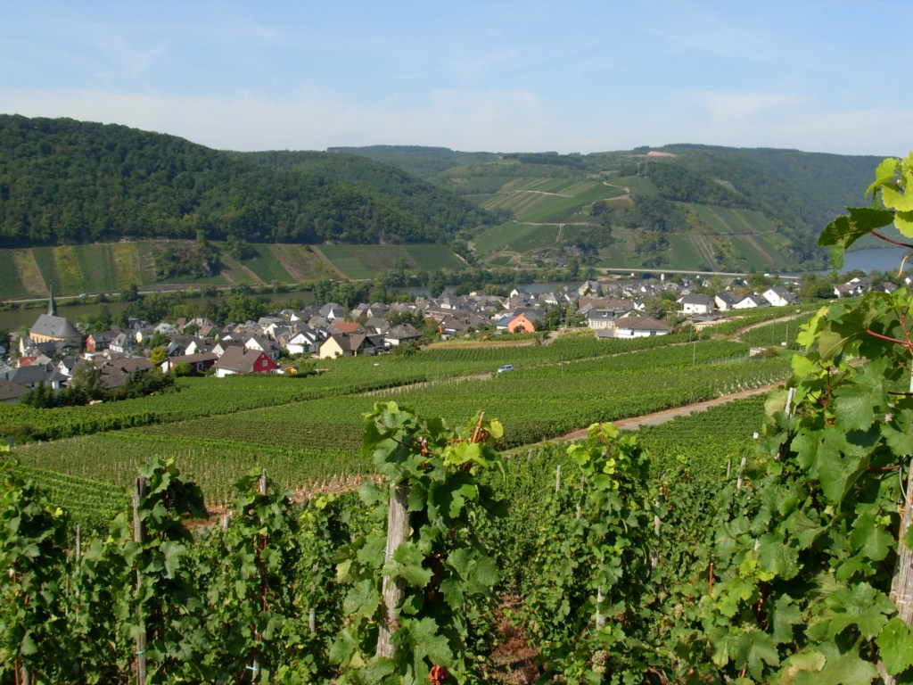
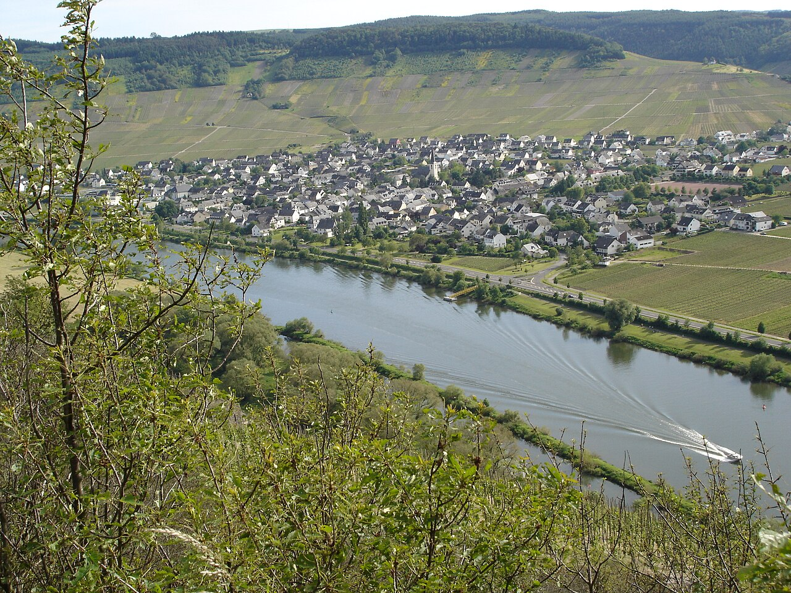
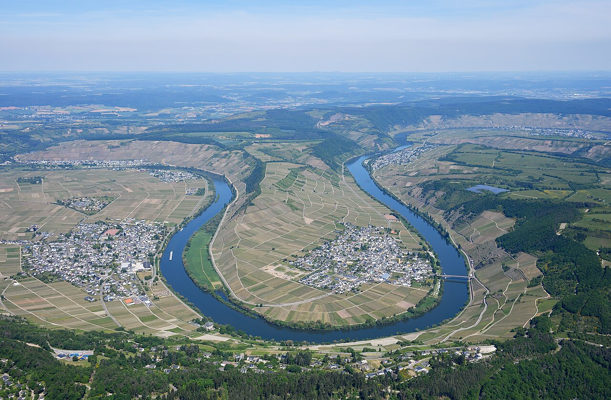
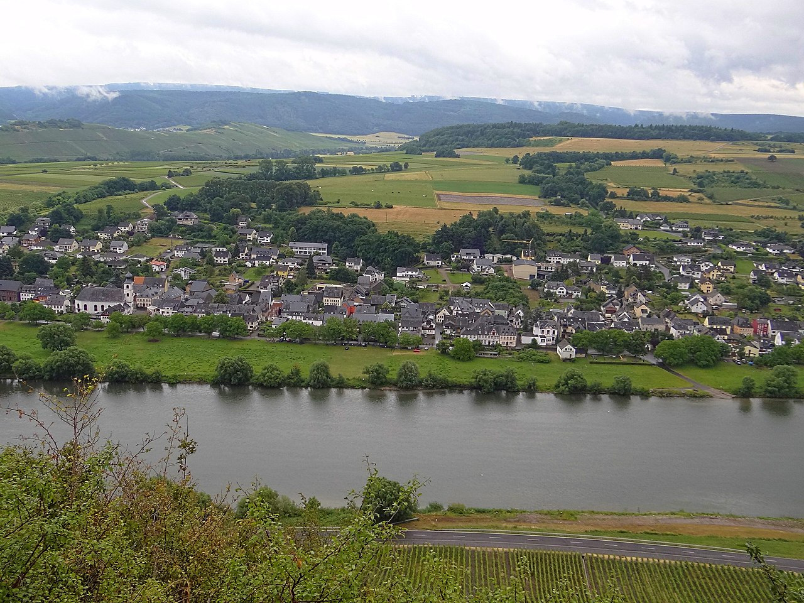


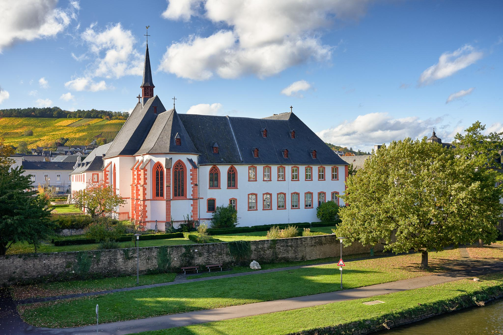
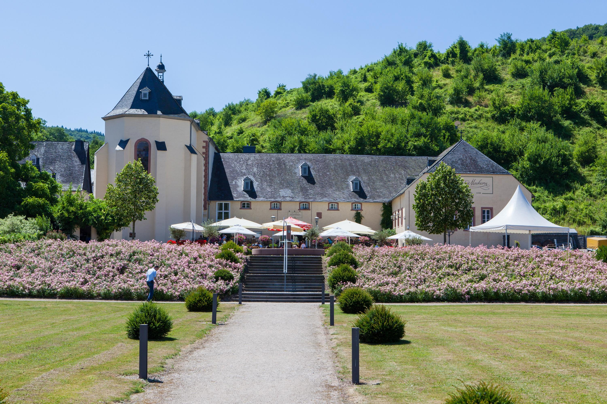
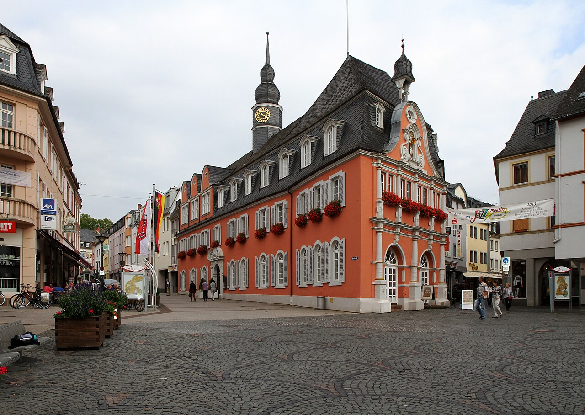
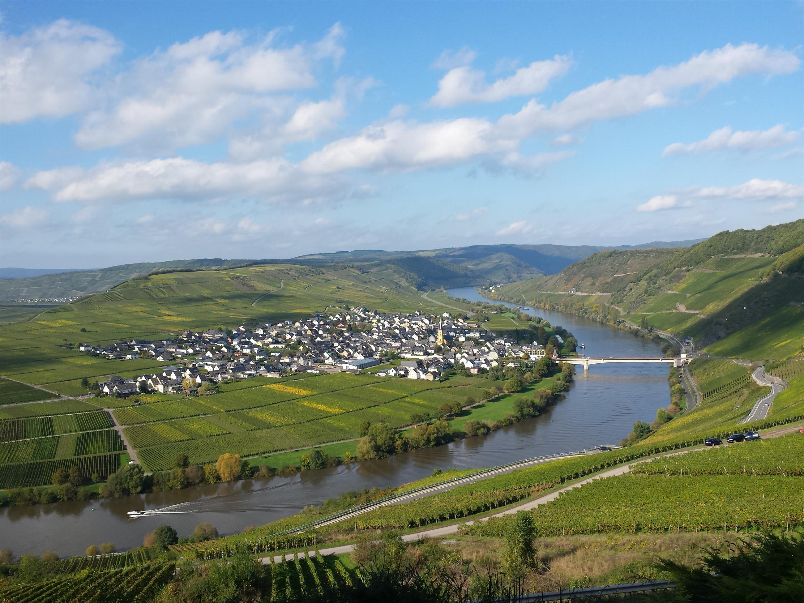
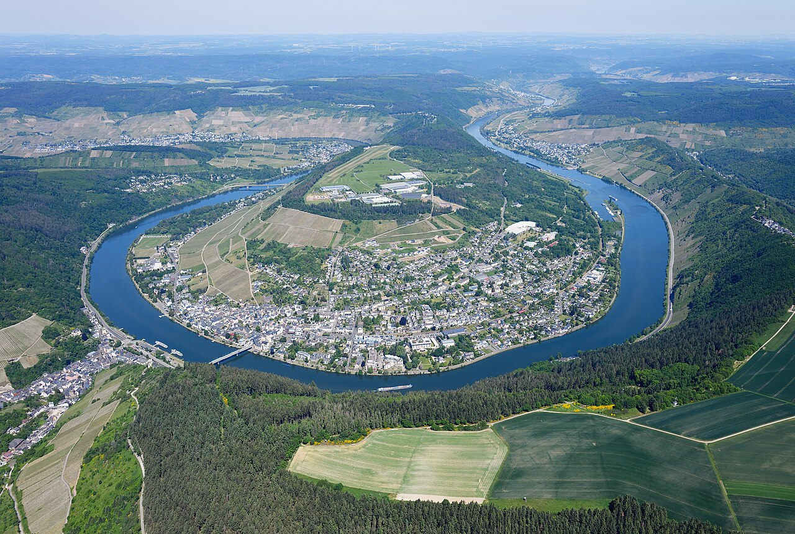
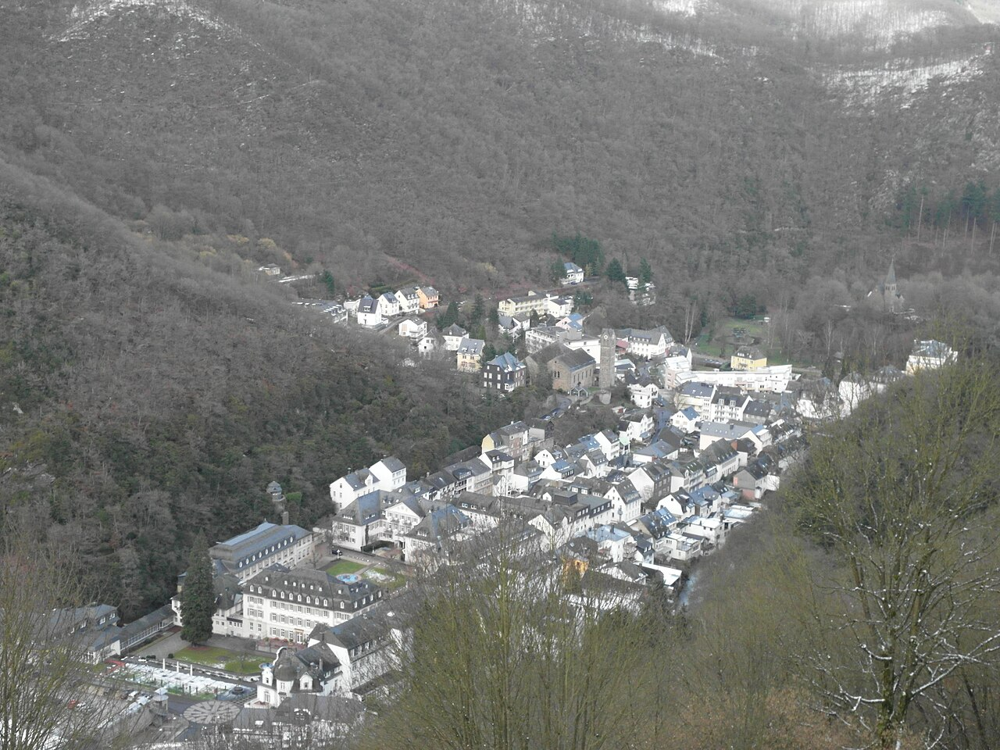
Premium loops, Moselsteig stages, and one via-ferrata sitting just outside the line.
Four cards from the longue durée — a Roman ship, a Roman press, a Roman villa, a 13th-century castle on Roman foundations.

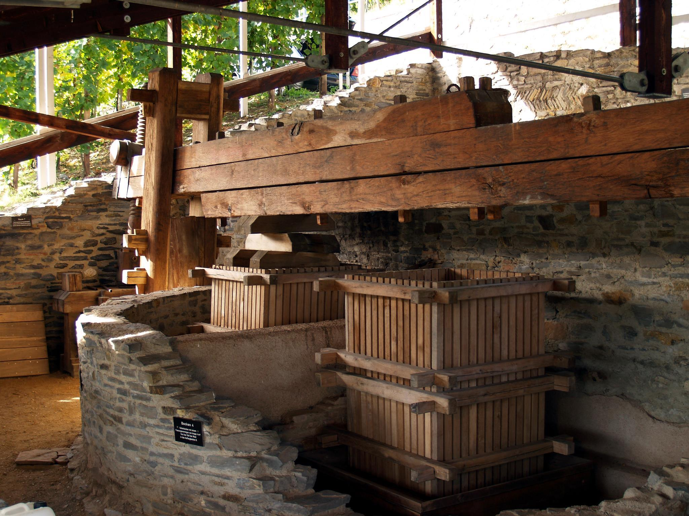
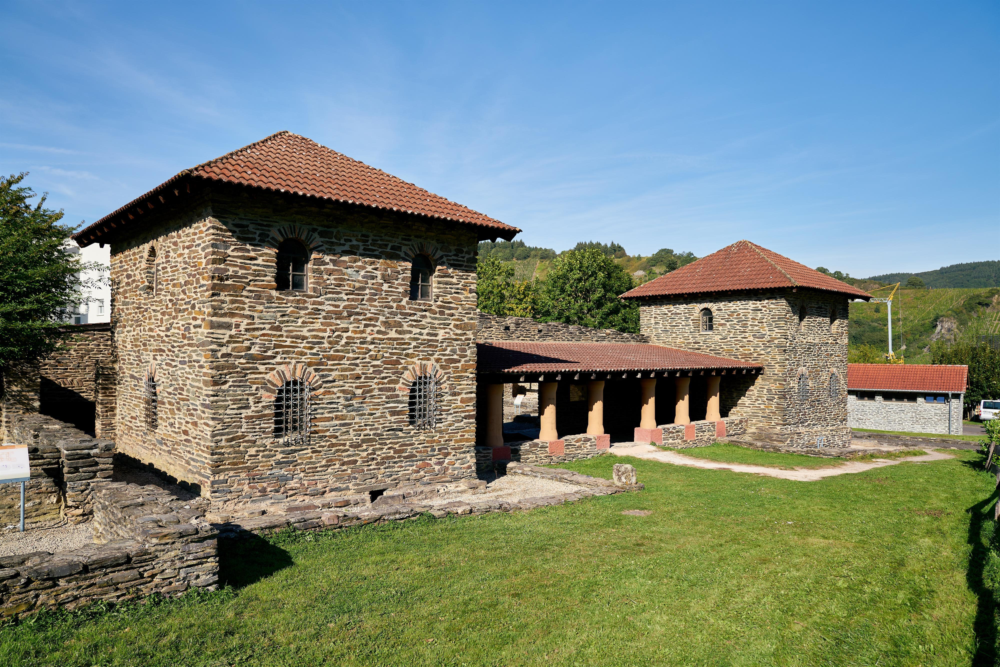
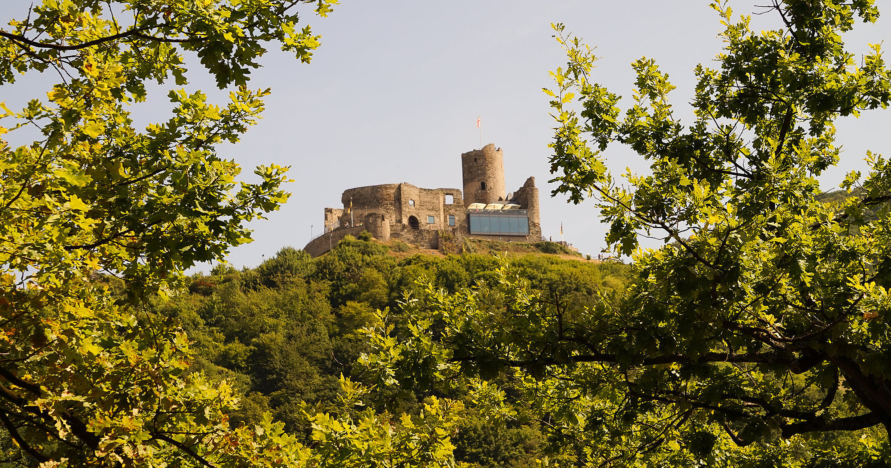
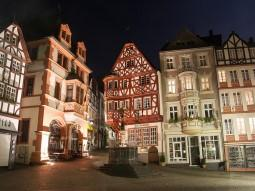
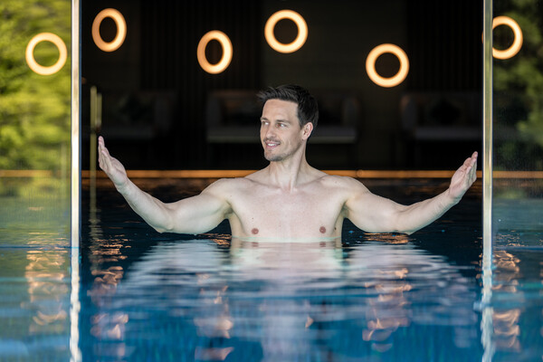
Two tiers: walk-in (no booking, broadest portfolio) and single-estate (book ahead). Pick three for a weekend.
In the village itself: Vinothek Piesport, Weinhaus Hoffmann, Weinbar am Markt — rotating local producers, no booking, walk straight from the table.
Four commemorative stamps for the festival dates worth booking around in 2026.
Three cards for the active hour, plus a treetop one for the children.
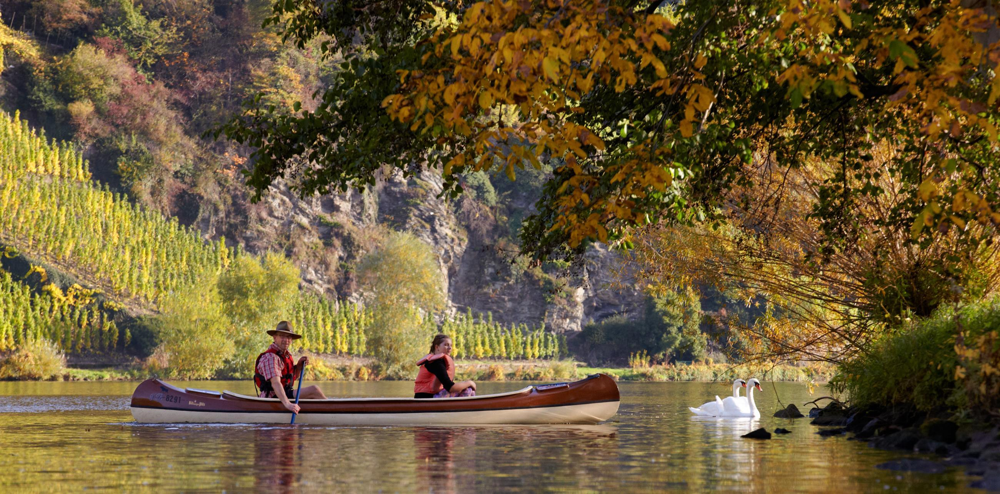


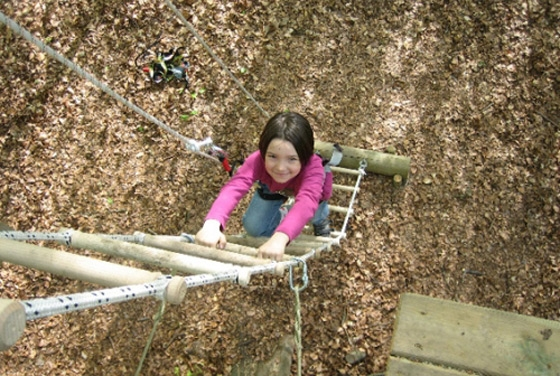
A milepost-strip read of the canonical's "distances at a glance" table — Piesport in the middle, the 30 km cap at the edges.
P.S. Trier sits 34 km by road — just outside the strict 30 km cap. The closest Roman monuments inside the radius are the Piesport press, the Neumagen wine-ship sculptures, and the Villa Rustica Mehring. Calmont sits 28 km straight-line / 45 km by road — flagged but listed.
Each card is the same physical postcard, but flipped — the address side, your handwritten message, a Mosel stamp.